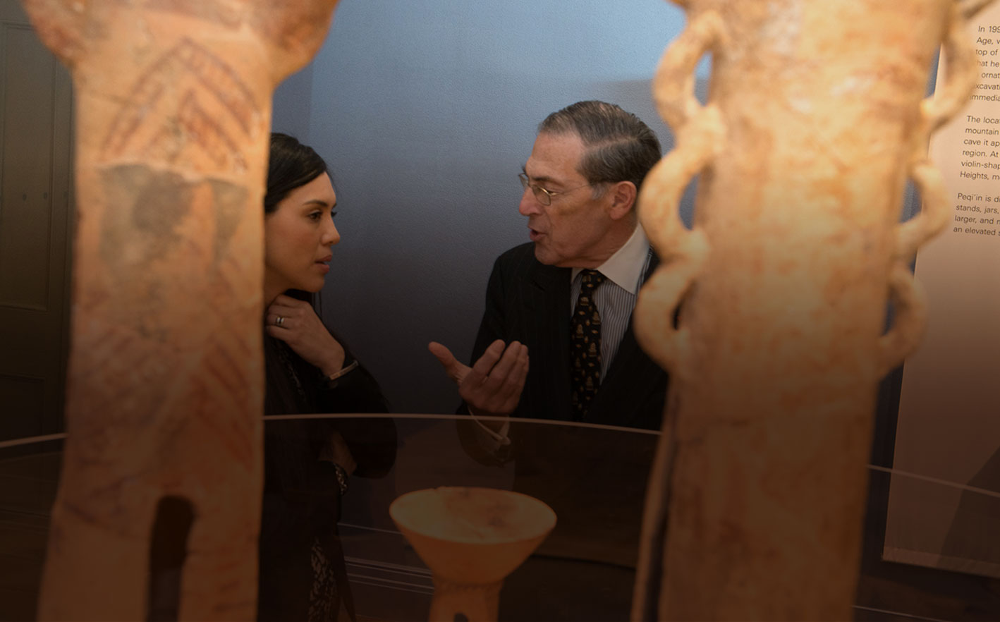
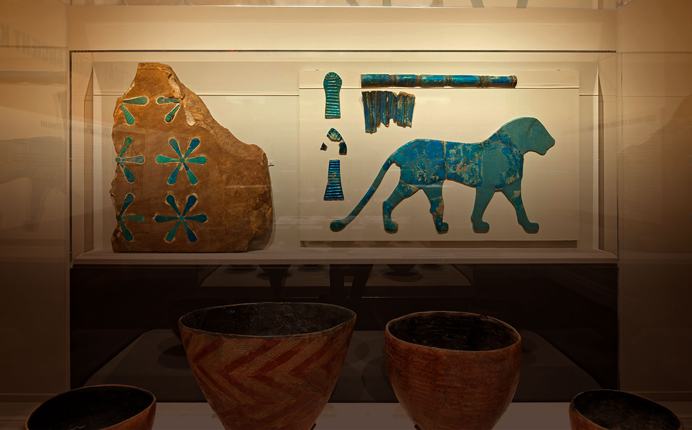

<!DOCTYPE html>
<html xmlns="http://www.w3.org/1999/xhtml"><head><meta http-equiv="Content-Type" content="text/html; charset=UTF-8" />
    <title>Plone site</title>
    <meta name="viewport" content="width=device-width, initial-scale=1, maximum-scale=1" />
    
    <link rel="stylesheet" type="text/css" href="http://cloud.typography.com/7953472/661168/css/fonts.css" />
    <link href='https://fonts.googleapis.com/css?family=Roboto+Slab:400,300,700' rel='stylesheet' type='text/css'>
    <link href='https://fonts.googleapis.com/css?family=Roboto:400,400italic,700,700italic' rel='stylesheet' type='text/css'>
    
    <link rel="shortcut icon" type="image/x-icon" href="http://plonedemo.com/favicon.ico" /><link rel="apple-touch-icon" href="http://plonedemo.com/touch_icon.png" /><link rel="alternate" href="http://plonedemo.com/RSS" title="Plone site - RSS 1.0" type="application/rss+xml" /><link rel="alternate" href="http://plonedemo.com/rss.xml" title="Plone site - RSS 2.0" type="application/rss+xml" /><link rel="alternate" href="http://plonedemo.com/atom.xml" title="Plone site - Atom" type="application/rss+xml" /><link rel="search" href="http://plonedemo.com/@@search" title="Search this site" />
    <style type="text/css">@import url("theme.css");</style>

	<script src="http://ajax.googleapis.com/ajax/libs/jquery/1/jquery.min.js"></script>
	<script src="_js/jquery.cycle2.min.js"></script>
	<script src="_js/isaw.js"></script>


</head>
<body class="home"><div id="visual-portal-wrapper">
	<div id="portal-top">
		<h1><a href="/">Institute for the Study of the Ancient World at NYU</a></h1>
		<div class="identity"><a href="/">ISAW</a></div>
		<h3 class="trigger">Menu</h3>
		<nav id="main-navigation">
			<ul id="primary">
				<li class="graduate"><a href="#">Graduate Studies</a></li>
				<li class="visiting"><a href="#">Visiting Scholars</a></li>
				<li class="exhibitions"><a href="#">Exhibitions</a></li>
				<li class="events"><a href="#">Events</a></li>
			</ul>
			<ul id="secondary">
				<li><a href="#">About ISAW</a></li>
				<li><a href="#">Our People</a></li>
				<li><a href="#">Library</a></li>
				<li><a href="#">Resources &amp; Publications</a></li>
				<li><a href="#">Research</a></li>
				<li><a href="#">News</a></li>
				<li class="search"><a href="#">Search</a></li>
			</ul>
		</nav>
		<div class="page-title">
			<h2 class="section-title">Our People</h2>
		</div>
	</div><!-- /#portal-top -->
    
<div id="portal-columns">
		<div id="column-contents">

	<div id="portal-column-content">
		<ul class="slides cycle-slideshow" data-cycle-fx="fade" data-cycle-timeout="10000" data-cycle-slides="> li" data-cycle-pager=".cycle-pager">
			<li><div class="content"><h3>ISAW is an Independent Research Center within NYU.</h3><p>We cultivate a new vision of the ancient old world by welcoming world-class <a href="#">visiting scholars</a>, training visionary <a href="#">graduate students</a>, and producing innovative publications. We serve the academic community and the public through our free, high-profile <a href="#">exhibitions</a> and academic <a href="#">events</a>.</p></div></li>
			<li><div class="content"><h3>ISAW is an Independent Research Center within NYU.</h3><p>We cultivate a new vision of the ancient old world by welcoming world-class <a href="#">visiting scholars</a>, training visionary <a href="#">graduate students</a>, and producing innovative publications. We serve the academic community and the public through our free, high-profile <a href="#">exhibitions</a> and academic <a href="#">events</a>.</p></div></li>
		</ul>
		<div class="cycle-pager"></div>
	</div>

		</div><!-- /#column-contents -->

	<div id="viewlet-below-content"></div>

</div>

<div class="visualClear"></div>
    
    <div class="footer-row">
        <div id="portal-footer">
			<div class="contact footer-portlet">
				<h3>Contact</h3>
				<p>15 East 84th St.<br />New York, NY 10028<br />212-992-7800<br /><a href="mailto:isaw@nyu.edu">isaw@nyu.edu</a></p>
			</div>
			<div class="support footer-portlet">
				<h3 class="support"><a href="#">Support ISAW</a></h3>
				<ul>
					<li><a href="#">Apply to ISAW</a></li>
					<li><a href="#">Careers at ISAW</a></li>
					<li><a href="#">Login</a></li>
				</ul>
			</div>
			<div class="hours footer-portlet">
				<h3>Gallery Hours</h3>
				<p><strong>Tues-Sun</strong> 11am-6pm</p>
				<p><strong>Friday</strong> 11am-8pm</p>
				<p><strong>Closed Monday</strong></p>
			</div>
			<div class="hours footer-portlet">
				<h3>Library Hours</h3>
				<p><strong>Mon-Fri</strong> 9am-5pm</p>
			</div>

        </div>
    </div>
</div></body>
</html>